TROPHY ROOM
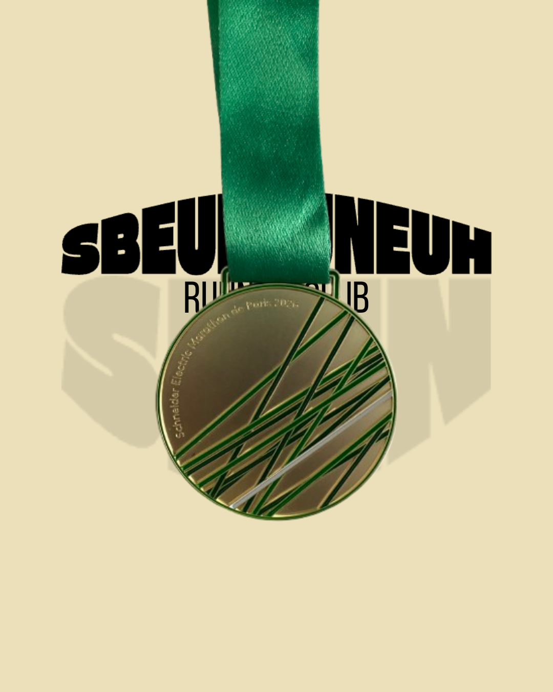
PARIS MARATHON
12 April 2026
Paul Bouchard
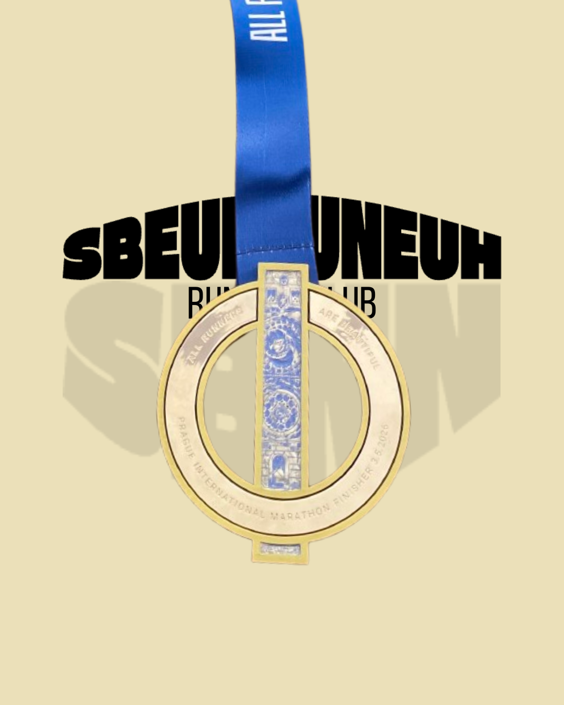
PRAGUE MARATHON
3 May 2026
Bérenger Isnard, Jeffrey Duval
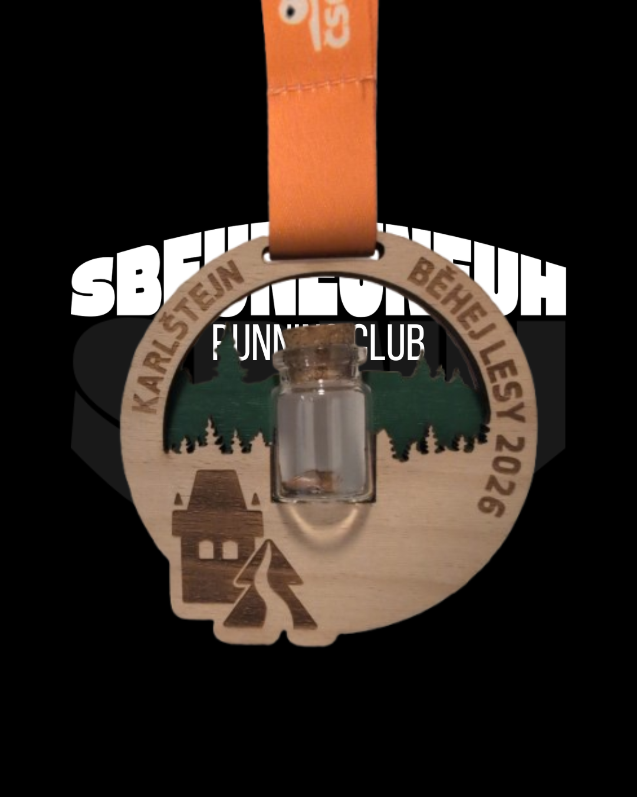
30KM KARLSTEJN
11 April 2026
Bérenger Isnard
29KM TRAIL DE AURAY
7 June 2026
Jérémie Dalle-Ekollo
28KM TIKEN TRAIL
18 April 2026
Jérémie Dalle-Ekollo
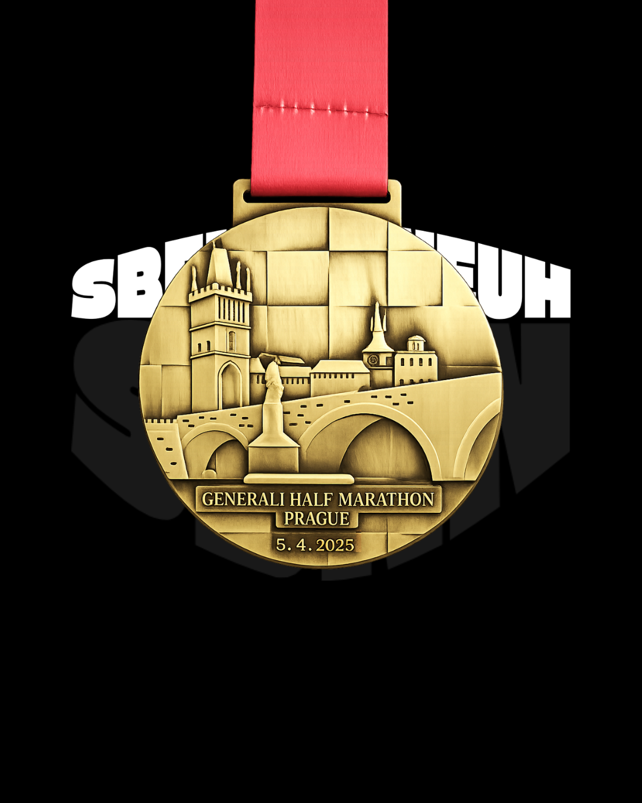
PRAGUE HALF MARATHON
5 April 2025
Jeffrey Duval
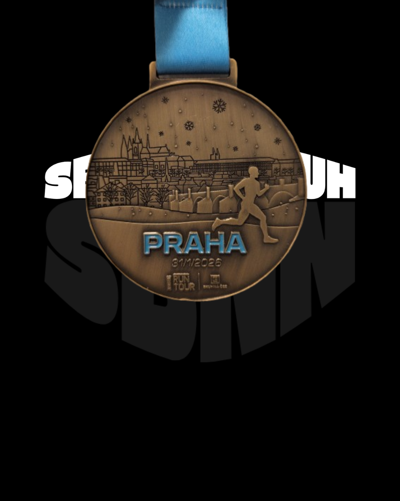
STROMOVKA HALF MARATHON
31 January 2026
Bérenger Isnard
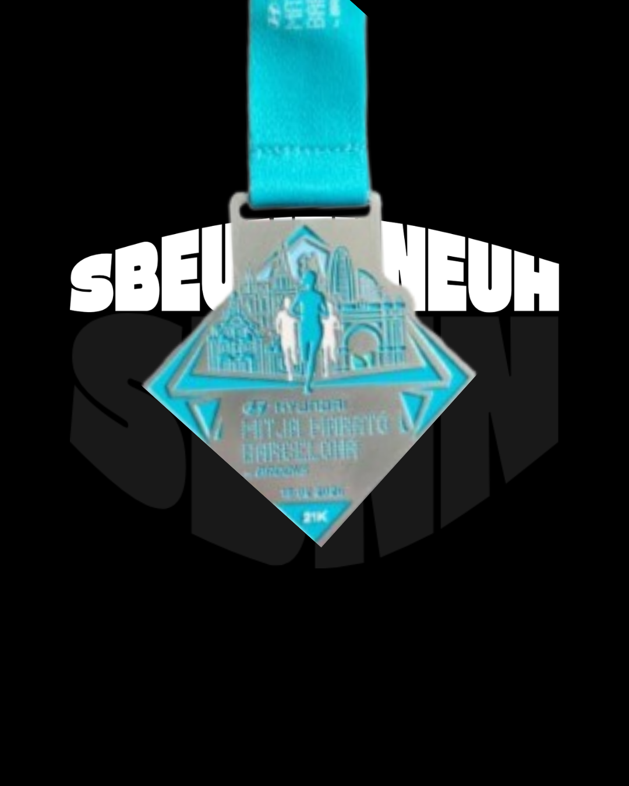
BARCELONA HALF MARATHON
15 February 2026
Jeffrey Duval
PRAGUE HALF MARATHON
28 March 2026
Bérenger Isnard
18KM TRAIL DE SQINT ANTOINE
25 May 2026
Jérémie Dalle-Ekollo
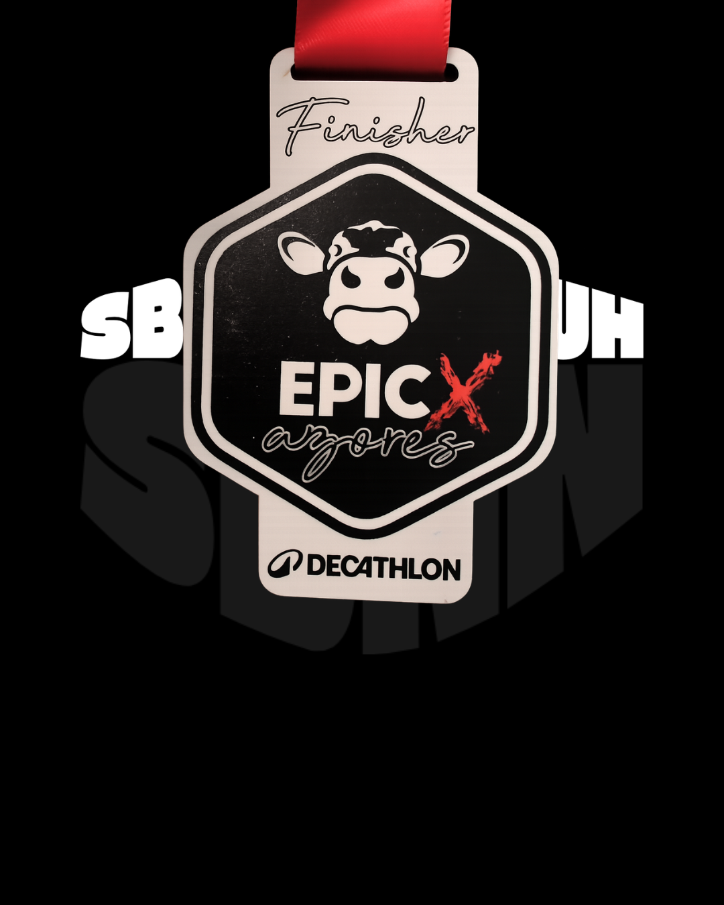
17KM AZORES EPIC TRAIL RUN
6 December 2025
Bérenger Isnard
17KM TRAIL DU TER
1 May 2026
Jérémie Dalle-Ekollo
16KM GAPEN'CIMES
4 October 2025
Bérenger Isnard
16KM TRAIL DE CAUDAN
1 March 2026
Jérémie Dalle-Ekollo
16KM TRAIL DU TER
1 May 2026
Jérémie Dalle-Ekollo
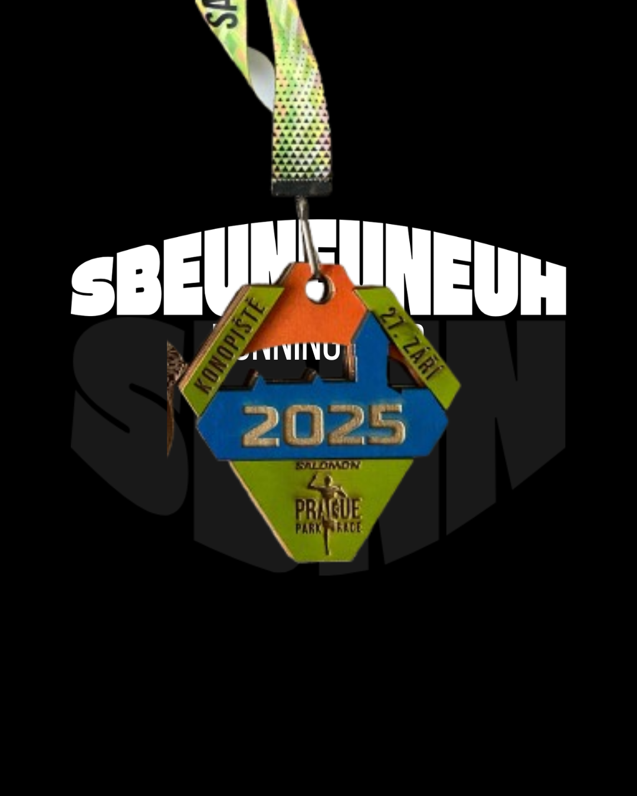
14KM PRAGUE PARK RACE - KONOPISTE
27 September 2025
Bérenger Isnard, Clarence Lobé
14KM TRAIL DO HAJE
22 November 2025
Bérenger Isnard
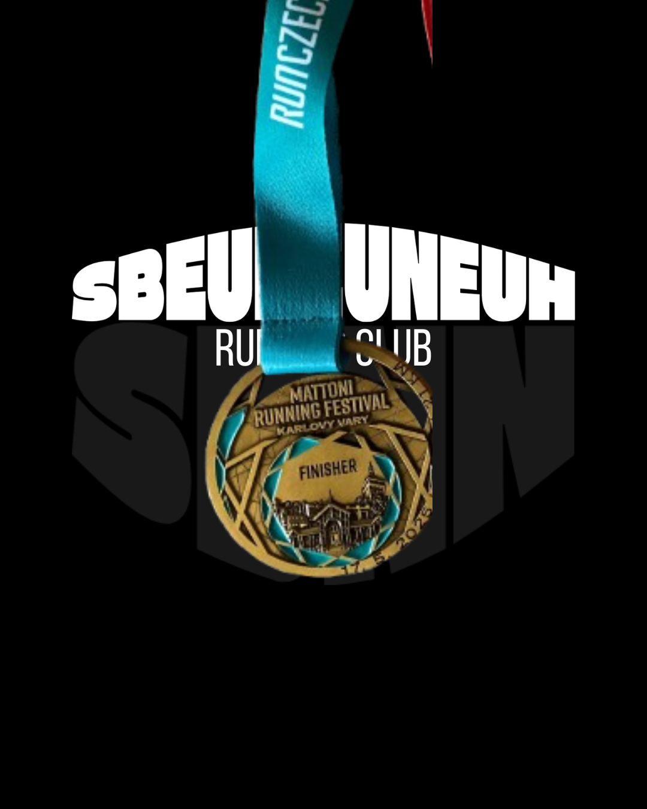
10KM KARLOVY VARY
17 May 2025
Bérenger Isnard, Clarence Lobé, Jeffrey Duval, Jonathan Robin, Julien Morainnes, Paul Bouchard
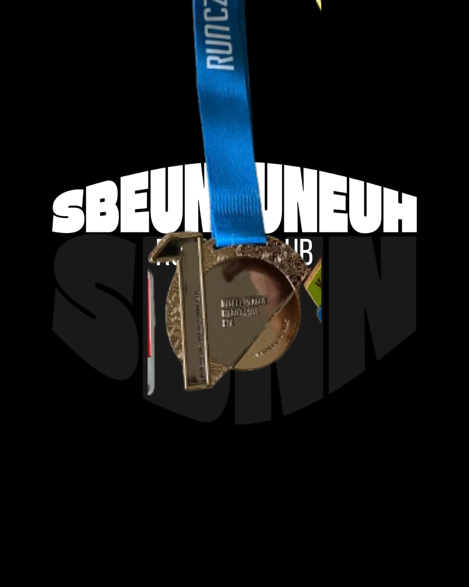
10KM NIGHT RUN PRAGUE
6 September 2025
Bérenger Isnard, Clarence Lobé, Jeffrey Duval, Jonathan Robin, Paul Bouchard
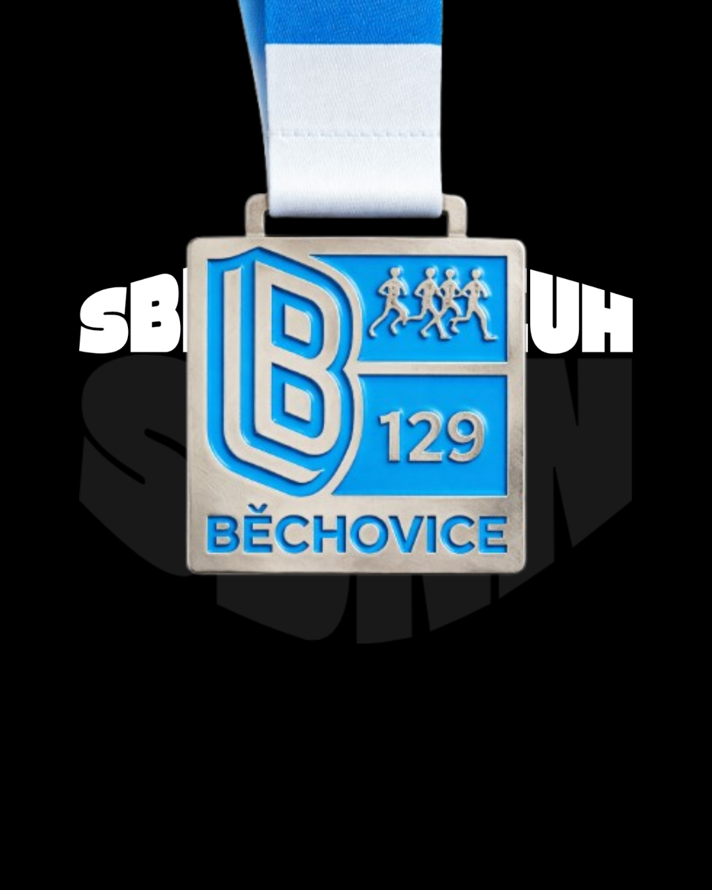
10KM BEHOVICE
27 September 2025
Jeffrey Duval, Jonathan Robin, Paul Bouchard
10KM TRAIL CAMPOS DO LIS
24 August 2025
Bérenger Isnard
10KM MALESTROIT
28 Mars 2026
Jérémie Dalle-Ekollo
8KM TRAIL VANNES
5 April 2026
Jérémie Dalle-Ekollo
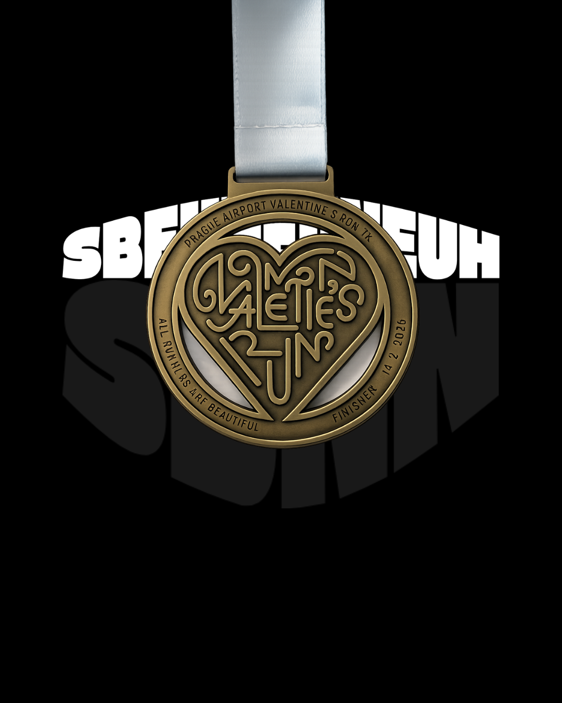
7KM PRAGUE VALENTINES RACE
14 February 2026
Bérenger Isnard, Filipa Ferreira
5KM PRAGUE RELAY
25 June 2025
Clarence Lobé, Paul Bouchard
5KM STROMOVKA
31 January 2025
Filipa Ferreira
5KM TALLINN LOVE RUN
8 March 2026
Lea Anclin
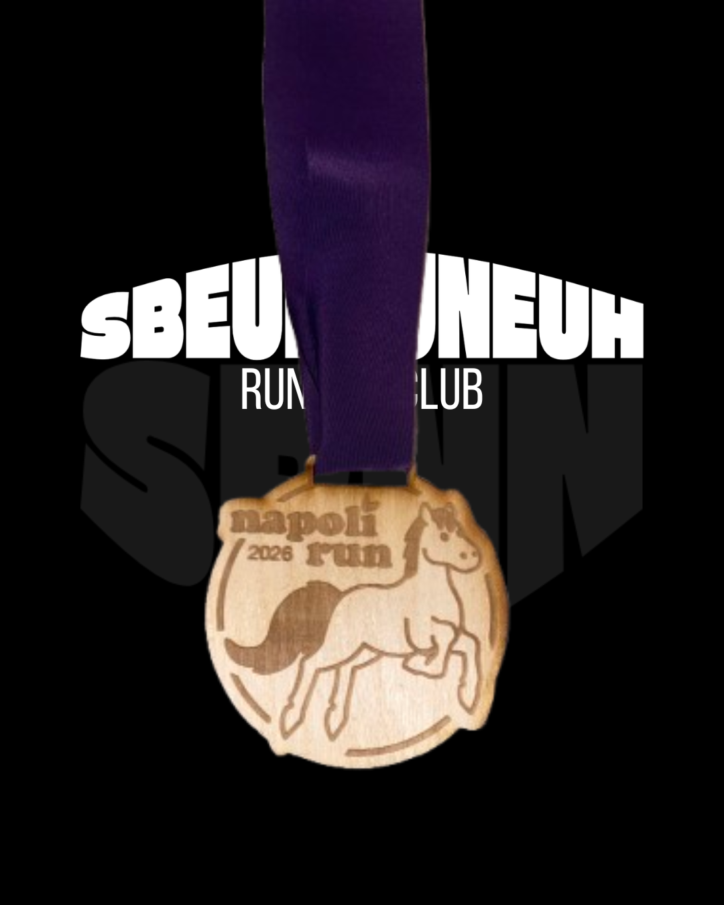
5KM NAPOLI RUN (HIPPOTHERAPY)
17 May 2026
Clarence Lobé, Veronika Petrackova